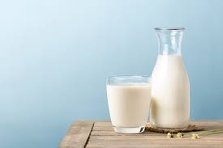
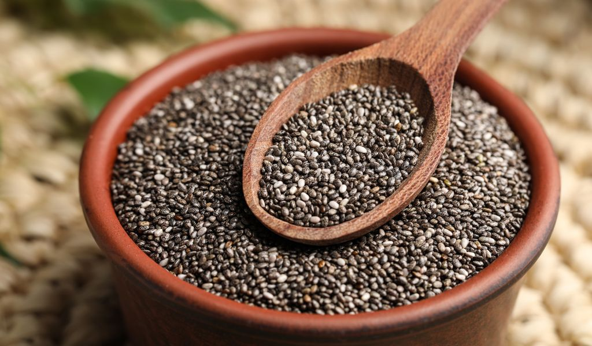

NOTÍCIAS

Água tônica faz bem ou mal? Nutricionista responde.
A água tônica pode ser boa em moderação, pois contém quinina, que ajuda em câimbras. Mas a versão comum tem açúcar, e a quinina pode causar efeitos colaterais em pessoas sensíveis. Como tudo, o segredo está no equilíbrio.
ler mais +++

Por que o leite não deve ser banido do seu cardápio, segundo a ciência.
Porque ele não é inflamatório, e elimina o risco de quedas que afetam a saúde dos ossos e do corpo em geral. Para a maioria das pessoas, ele faz bem se consumido com moderação.
ler mais +++

Chia emagrece?
As sementes de chia podem ajudar no emagrecimento porque são ricas em fibras, que aumentam a saciedade, e têm poucas calorias. Mas sozinhas, não fazem milagres – precisam estar acompanhadas de uma alimentação equilibrada e exercícios.
ler mais +++